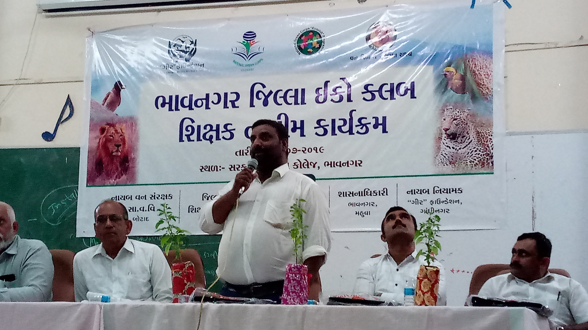
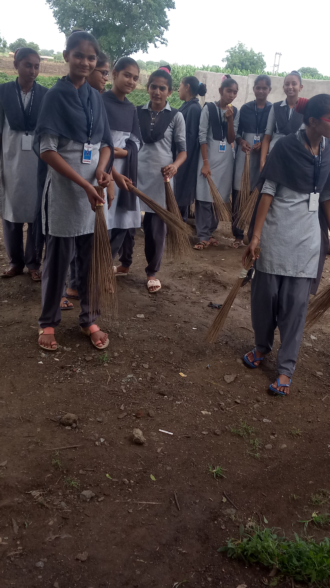
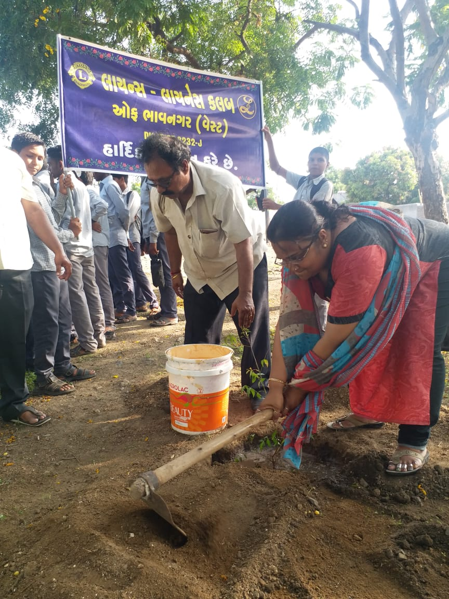

Program Highlights

District Eco Club School Program
Collaborative district-wide program — nature walks, eco-activities, live demos.


Beach Cleanliness Program (Lions Club)
Coastal clean-up to protect marine & coastal bird life.



Village Cleanliness Program – 2
Expanded drive — clearing plastic, wells, and pathways; local pledges.


Village Tree Plantation (KV Dhameliya)
Students & Forest Dept planting native saplings — living classroom.



Tree Plantation (Lions Club of Bhavnagar)
Planting native trees for shade and habitat restoration.


Village Cleanliness Program – 1
Community clean-up, sapling planting, & waste-management awareness.


Home English Medium School – 2018
Bird observation & identification sessions with students.


Home English Medium School – 2017
Our first awareness program — guided walk, bird lessons & respect for nature.